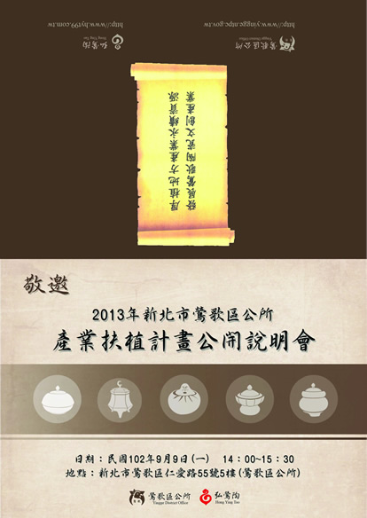
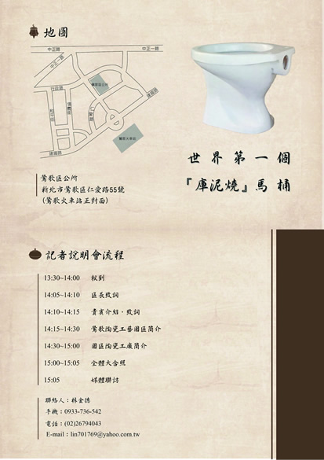

「鶯歌陶瓷工藝園區-產業扶植記者招待會」暨全世界第一座庫泥燒馬桶發表 |
| 新北市鶯歌區公所訂於102年9月9日(星期一)下午2時，假公所5樓(北鶯里市民活動中心)召開「鶯歌陶瓷工藝園區-產業扶植記者招待會」。 新北市鶯歌區在101年參加由聯合國環境規劃總署（UNEP）主辦第16屆國際宜居城市獎大賽中，榮獲社區類C組第3名殊榮，在評審項目「藝術、文化與遺產」、「自然、人文景觀」、「環境保護」、「社區參與」、「健康生活」及「策略規劃」等6個面向的實踐行動方案獲得肯定。已成為全球宜居城市典範之一。 未來如何延續這份殊榮，或再次提昇國際能見度，並提昇陶瓷產業升級及多元永續經營，新北市政府及鶯歌區公所將持續就陶瓷產業扶植及環境營造工作推動。 位於鶯歌區建國路、永新巷中陶瓷工廠及工作室為區內陶瓷業較集中區域且鄰近鶯歌陶瓷老街，就都市計畫發展、地理位置、觀光及文化創意發展極具優勢。區內業者、里長、協會自發性成立推動小組，期型塑成為「鶯歌陶瓷工藝園區」。為此近來新北市政府已召開多次會議，後續將規劃近、中、長期整體計畫，期待本區成為兼具文化創意與城鄉風貌特色之園區。 記者會現場除介紹園區工廠及工作室，並發表全世界第一座-庫泥燒馬桶及在地具代表性陶瓷特色產(作)品。 最後，期望透過本次記者會拋磚引玉，能讓業者與媒體、政府機關交流，認識工藝園區全貌及特色進而讓民眾更易浸淫於陶瓷文化氛圍中，亦能讓鶯歌燒陶瓷品邁入下一個二百年。 |
|   |
| 參與廠商 |